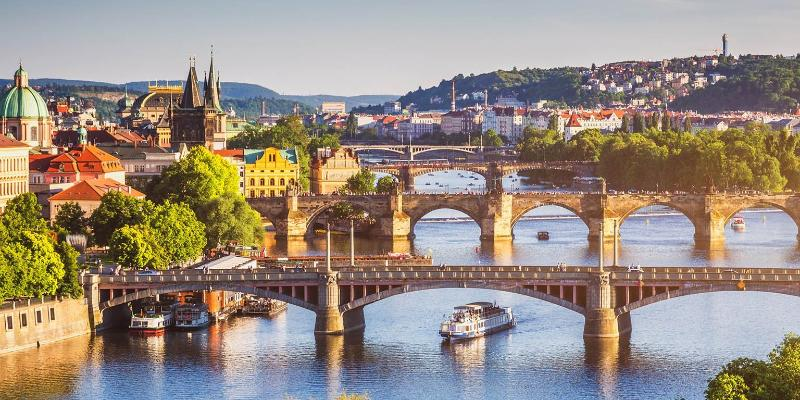
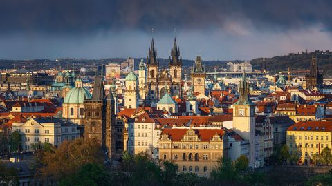
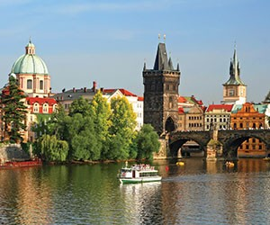
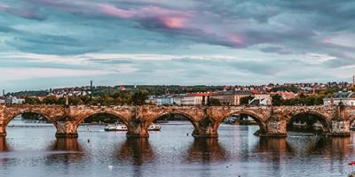

Прага
Місто, де оживають легенди
Прага — це магія, застигла в камені готичних соборів та на вузьких вуличках, що пахнуть свіжою випічкою і старовиною. Моя подорож була схожа на прогулянку декораціями до фільму, де за кожним поворотом на Карловому мосту відкривається новий неймовірний краєвид.
Особливе враження справила Староміська площа з її знаменитим астрономічним годинником. Кожну годину натовп завмирає, щоб побачити міні-виставу фігур апостолів — це момент, коли час ніби зупиняється.
Не можна оминути увагою і затишні кафе, де подають ароматну каву та традиційний трдельник. Вечірні прогулянки створюють атмосферу спокою.
Ця поїздка надихнула мене більше цікавитися архітектурою та історією Європи.